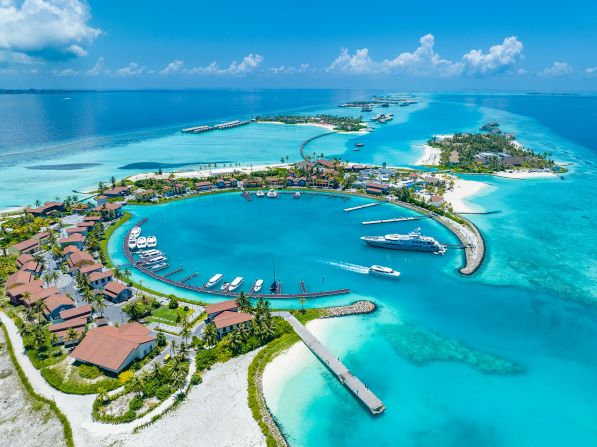

Maldives

The Maldives has been one of my dream destinations for as long as I can remember. The sheer beauty of this tropical paradise is enough to make anyone fall in love with it, and for me, that alone is reason enough to want to visit. The crystal-clear waters, white sandy beaches, and vibrant marine life make it feel like a slice of heaven on Earth. Just imagining myself relaxing by the shore, watching the sunset over the turquoise ocean, or snorkeling among colorful coral reefs fills me with excitement. I want to experience the serenity and natural wonders of the Maldives firsthand, not just admire them from pictures.
The Maldives is an island nation in the Indian Ocean, known for its pristine beaches and overwater bungalows. Here’s how to get there: